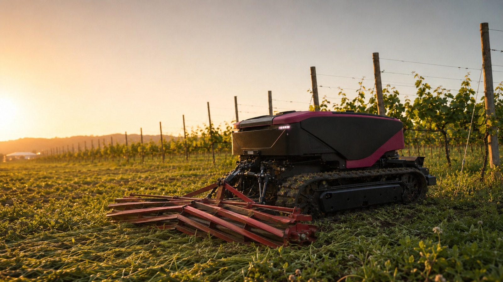
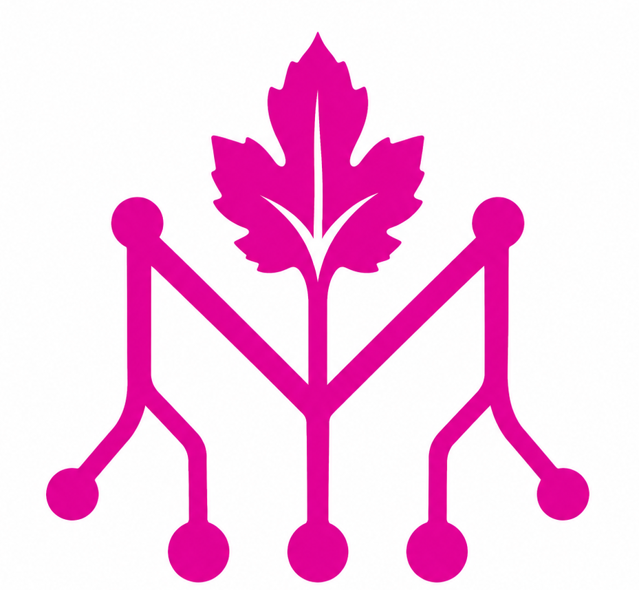

Missione
Accelerare la transizione verso un'agricoltura rigenerativa e accessibile, dalle grandi aziende alle piccole realtà familiari. Restituiamo libertà operativa, flessibilità e controllo a chi lavora la terra.


Mycelium è una piattaforma elettrica, autonoma e connessa.
Lavora nei campi per ridare valore al suolo, alla biodiversità e al tempo degli agricoltori.
Aumenta la produttività agricola, riduce l'impatto delle lavorazioni e permette di automatizzare attività ripetitive senza rinunciare al controllo.
marchio © copyright Mycelium Lab s.r.l. — rights reserved — P.IVA 04262350368
Nato dal campo, progettato per liberare tempo.
Mycelium nasce dall'incontro tra chi l'agricoltura la vive ogni giorno e chi progetta tecnologie per renderla più autonoma, accessibile e sostenibile.
L'esperienza diretta del lavoro in campo si unisce alle competenze in elettrificazione, automazione agricola e software.
Da questa combinazione nasce un nuovo modo di concepire il precision farming: non macchine più grandi, ma strumenti più intelligenti, leggeri e vicini alle esigenze reali degli agricoltori.

Accelerare la transizione verso un'agricoltura rigenerativa e accessibile, dalle grandi aziende alle piccole realtà familiari. Restituiamo libertà operativa, flessibilità e controllo a chi lavora la terra.
Una rete di piccoli nodi intelligenti che operano nel paesaggio senza dominarlo. Come il micelio nei boschi, connettiamo macchine, dati ed energia in un sistema adattabile e resiliente.
Pensato per lavorare dentro ecosistemi vivi.
Mycelium lavora in modo continuo, leggero e selettivo.
È progettato per sostenere pratiche agricole meno invasive, integrate con la biodiversità e più rispettose del suolo.
Grazie alla trazione elettrica, al peso contenuto e al lavoro preciso, riduce il compattamento del terreno, le emissioni locali e l'impatto delle lavorazioni ripetitive.
Per la prima volta non è l'agricoltura che deve adattarsi alla macchina: è la macchina che si adatta all'agricoltura rigenerativa.
Soluzioni aperte a tutti.
MyceliumOS è un ecosistema open source sviluppato insieme agli agricoltori.
La piattaforma nasce per rimanere vicina al campo: può evolvere nel tempo, adattarsi a colture, attrezzi e lavorazioni diverse, e migliorare grazie all'esperienza degli utenti.
L'obiettivo è creare una tecnologia agricola accessibile, modificabile e utile nella pratica quotidiana: non un sistema chiuso, ma una piattaforma aperta che cresce con chi la usa.
Mycelium non è una macchina.
È il sistema operativo dell'agricoltura rigenerativa.
Una piattaforma elettrica, autonoma e connessa che restituisce suolo, biodiversità, produttività e tempo.

Lavora giorno e notte, si ricarica da solo e torna in campo.
Mycelium è un robot agricolo autonomo progettato per lavorare 24 ore su 24, 7 giorni su 7.
Con una carica può gestire fino a 10 ettari, in funzione del tipo di lavorazione, dell'attrezzo utilizzato e delle condizioni del terreno.
Quando la batteria è scarica, rientra automaticamente alla stazione di ricarica, si ricarica e torna a lavorare.
La ricarica automatica è di serie. In alternativa, con lo swap batteria, il cambio batteria può essere completato in circa 15 minuti.
25 CV di PTO e 25 CV di potenza elettrica continuativa di trazione, finemente regolabile e silenziosa anche per il lavoro notturno. Affronta pendenze fino al 35%.
Autonomo o da radiocomando. Sensori e telecamere a 360° per navigazione e anti-collisione. Aggancio automatico degli attrezzi e rifornimento serbatoi automatico.
Compatibile con gli attrezzi agricoli standard.
Mycelium è progettato per lavorare con attrezzi agricoli standard già presenti in azienda.
È dotato di presa di forza meccanica compatibile con standard ISO 500 e di sollevatore posteriore idraulico a tre punti ISO 730, categoria CAT I/II, con capacità fino a 1 tonnellata.
Il sollevatore frontale è disponibile come optional, insieme ad accessori come pala e lama bulldozer.
La macchina integra connessione ISOBUS e box di distribuzione idraulico di serie, per gestire attrezzi, sensori e funzioni operative in modo semplice e controllato.
Tutto come il tuo trattore ma totalmente automatico, in lavorazione, ricarica e aggancio attrezzi. Fornisce inoltre energia elettrica 230 V∼c 32 A, gestisce il quaderno di campagna e produce report utili sullo stato di salute di piante e animali.
Lunghezza 2,6 m, altezza 1,4 m, con carreggiata regolabile da 0,75 a 1,3 m.
Osserva ed elabora dati confrontandoli con meteo e storico. Fornisce suggerimenti e ottimizza le operazioni per maggiore produttività e minor costo.
Payback in meno di 2 anni. Risparmio operativo -25 €/h.
5 anni. Servizi di assistenza e ricambi a domicilio entro 48 h.
Noleggio o acquisto, in base alle esigenze dell'azienda agricola.
Mycelium può essere utilizzato con modello Fleet-as-a-Service a partire da 100 €/h per robot, oppure acquistato da 95.000 € + IVA, con robot Mycelium e stazione di ricarica inclusi.
L'investimento può accedere, ove applicabile, agli strumenti di agevolazione disponibili per beni strumentali, tecnologie 4.0, Transizione 5.0, Nuova Sabatini, investimenti green e progetti di efficientamento energetico.
Il costo effettivo per l'azienda dipende dal profilo dell'impresa, dalla configurazione del bene, dal progetto di investimento e dai requisiti tecnici, fiscali ed energetici previsti dalla normativa.
Il beneficio complessivo può ridurre in modo significativo il costo effettivo dell'investimento, previa verifica dei requisiti e dei limiti di cumulo applicabili.
Stima indicativa e non vincolante. Le agevolazioni non costituiscono sconto diretto sul prezzo e dipendono da requisiti soggettivi dell'impresa, interconnessione del bene, risparmio energetico certificato, disponibilità fondi e normativa vigente. Verificare l'applicabilità con il proprio consulente fiscale.